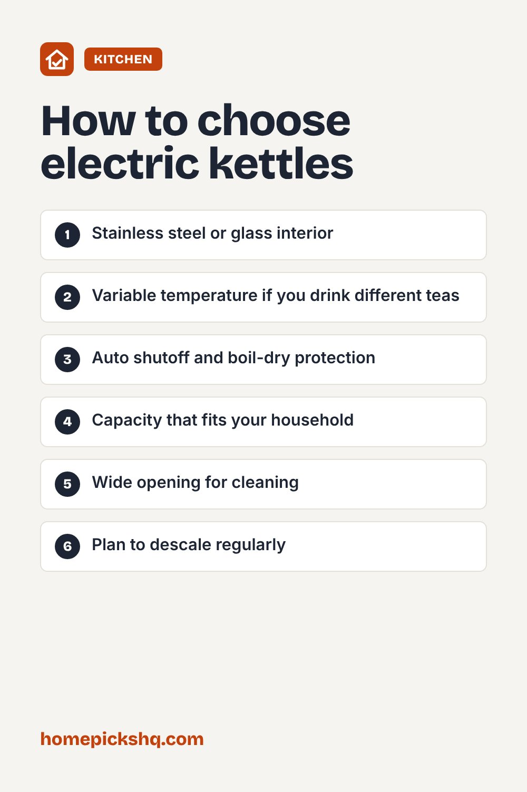

Best Electric Kettles: Features That Actually Matter

How we write these guides: we research manufacturer specifications, expert guidance, and owner feedback. We do not claim to have lab-tested every product. Links to Amazon on this page are affiliate links; see our disclosure.
An electric kettle boils water faster than most stovetops and shuts off on its own. It is useful for tea, instant oatmeal, pour-over coffee, and quick cooking steps. A few features, like temperature control and the interior material, make a real difference in daily use.
Browse electric kettles on Amazon
Material
Stainless steel kettles are durable and do not absorb flavors. Glass lets you see the water and watch limescale, but it can be fragile. Ceramic looks nice but is heavy. Check that the interior touching the water is stainless steel or glass rather than plastic, since plastic can leave a smell or taste in some models.
Temperature control
Different drinks taste best at different temperatures. Black tea and herbal tea are usually brewed with water near boiling, while green and white teas are generally better with cooler water, often around 160 to 185°F. Pour-over coffee is commonly brewed around 195 to 205°F. A variable-temperature kettle takes the guessing out.
Capacity and speed
Most kettles hold about 1 to 1.7 liters. A 1 liter kettle is fine for one or two cups, while 1.5 to 1.7 liters suits families. Many models are about 1,500 watts and boil a liter in just a few minutes. Remember to boil only as much water as you need.
Safety features
Look for automatic shutoff when the water boils and boil-dry protection if the kettle is switched on empty. A cordless base lets you pick up and pour easily. A lid that locks and a handle that stays cool are also useful.
Gooseneck kettles
Gooseneck kettles have a thin, curved spout that gives precise control over the pour, which is helpful for pour-over coffee. If you only need hot water, a standard spout is fine.
Descaling
Mineral buildup, called limescale, can slow heating and affect taste. Descale every month or two in hard-water areas by boiling equal parts water and white vinegar, letting it sit, and then rinsing well.
Quick buying checklist
- Stainless steel or glass interior
- Variable temperature if you drink different teas
- Auto shutoff and boil-dry protection
- Capacity that fits your household
- Wide opening for cleaning
- Plan to descale regularly
See electric kettles on AmazonUse the checklist above to compare options. As an Amazon Associate I earn from qualifying purchases.

Frequently asked questions
Is it safe to leave water in the kettle?
It is best to empty it so it does not taste stale and so scale builds up more slowly.
Why does my kettle taste like plastic?
New kettles can have a smell. Boil and discard a few batches. If it persists, the materials may not suit you.
Can I boil anything other than water?
No. Only use it for water unless the manufacturer says otherwise.